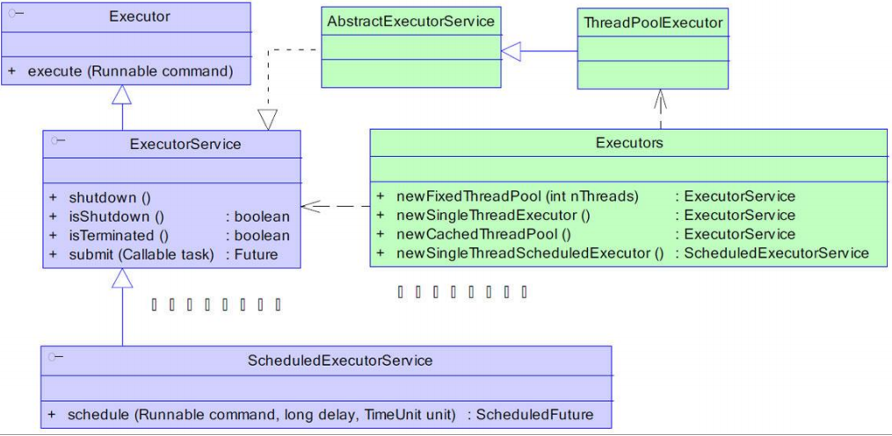
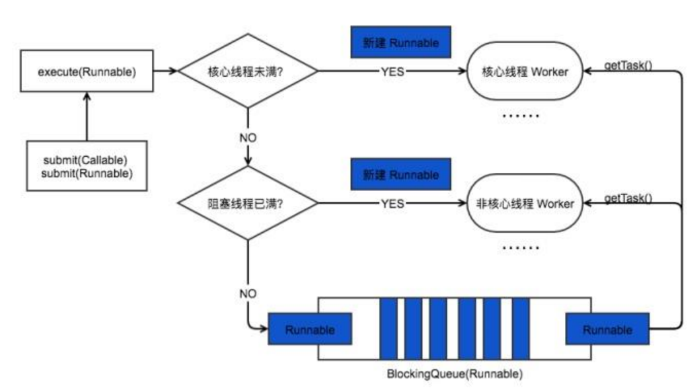
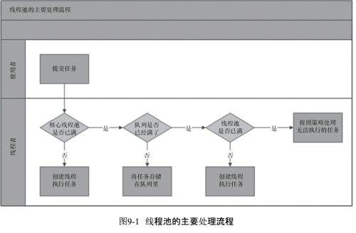

一、线程池的工作原理
线程池的作用是有效的降低频繁创建销毁线程所带来的额外开销。线程池做的工作主要是控制运行的线程的数量，处理过程中将任务放入队列，然后在线程创建后启动这些任务。如果线程数量超过了线程池最大数量，超出数量的线程排队等候，等其他线程执行完毕，再从队列中取出任务来执行。
它的主要特点为：线程复用、控制最大并发数、管理线程。
1）线程复用：每一个thread类都有一个start方法，当调用start方法启动线程时Java虚拟机会调用该类的run方法，而该类的run()方法就是调用了Runnable对象的run方法。我们可以继承重写thread类，在其start方法中添加不断循环调用传递过来的Runnable对象。这就是线程池的实现原理。循环方法中不断获取Runnable是用队列实现的，在获取下一个Runnable之前可以是阻塞的。
二、线程池的组成
一般线程池主要分为以下4个组成部分：
1）线程池管理器：用于创建并管理线程池
2）工作线程：线程池中的线程
3）任务接口：每个任务必须实现的接口，用于工作线程调度其运行
4）任务队列：用于存放待处理的任务，提供一种缓冲机制
Java中线程池是通过Executor框架实现的，该框架中用到了Executor、Executors、ExecutorService、ThreadPoolExecutor、Callable和Future、FutureTask这几个类。

ThreadPoolExecutor的构造方法如下：
1 public ThreadPoolExecutor(int corePoolSize,int maximumPoolSize, long keepAliveTime,TimeUnit unit,BlockingQueue<Runnable> workQueue) {
2 this(corePoolSize, maximumPoolSize, keepAliveTime, unit, workQueue,Executors.defaultThreadFactory(), defaultHandler);
3 }主要参数：
1）corePoolSize：指定了线程池中的线程数量；
2）maximumPoolSize：指定了线程池中的最大线程数量；
3）keepAliveTime：当前线程池数量超过corePoolSize时，多余的空闲线程的存活时间，即多次时间内被销毁；
4）unit：keepAliveTime的单位；
5）workQueue：任务队列，被提交但尚未被执行的任务；
6）threadFactory：线程工厂，用于创建线程，一般用默认的即可；
7）handler：拒绝策略，当任务太多来不及处理，如何拒绝任务；
三、拒绝策略
线程池中的线程已经用完无法继续为新任务服务，同时等待队列也已经排满再也塞不下新任务时，就需要拒绝策略处理这个问题。
JDK内置的拒绝策略如下：
1）AbortPolicy：直接抛出异常，阻止系统正常运行，为默认策略；
2）CallerRunsPolicy：只要线程池未关闭，该策略直接在调用者线程中运行当前被丢弃的任务；
3）DiscardOldestPolicy：丢弃即将被执行的一个任务，并执行当前任务；
4）DiscardPolicy：该策略丢弃无法处理的任务，不予任何处理；
拒绝策略均实现了RejectedExecutionHandler接口，若以上策略仍无法满足实际需要，可自行扩展此接口。
四、Java线程池工作过程
1.线程池刚创建时，里面没有一个线程。任务队列是作为参数传进来的。不过就算队列里面有任务，线程池也不会马上执行它们。
2.当调用execute()方法添加一个任务时，线程池会做如下判断：
1）如果正在运行的线程数量小于corePoolSize（线程池中的核心线程数），那么马上创建线程运行这个任务。
2）如果正在运行的线程数量大于等于corePoolSize，那么将这个任务放入任务队列。
3）如果这时队列满了，而在正在运行的线程数量小于maximumPoolSize，那么还是要创建非核心线程立刻运行这个任务。
4）如果队列满了，而且正在运行的线程数量大于等于maximumPoolSize，那么线程池会抛出异常RejectExecutionException。
3.当一个线程完成任务时，它会从队列中取下一个任务来执行。
4.当一个线程无事可做，超过一定的时间（keepAliveTime）时，线程池会判断，如果当前运行的线程数大于corePoolSize，那么这个线程就被停掉。所以线程池的所有任务完成后，它最终会收缩到corePoolSize的大小。

五、线程池的执行流程
为了避免重复的创建线程，线程池的出现可以让线程进行复用。通俗的讲，当有工作来时，就会向线程池拿一个线程，当工作完成后，并不是直接关闭线程，而是将这个线程归还给线程池供其他任务使用。
合理使用线程池能够带来的好处：1）降低资源消耗 2）提高响应速度 3）提高线程的可管理性 4）提高程序的高可用性。
那么线程池是如何工作的呢？
举例：
首先，线程池会判断核心线程池里的线程（线程总数为30，则corePoolSize有可能是10）是否都在执行任务。如果没有，比方说当前只有九个线程在工作，则从核心线程池中创建一个新的线程来执行任务。如果当前已经有10个线程在工作了，则进入下一步：
其次，线程池会判断工作队列是否已经满了，如果工作队列没有满，则将提交的任务存储在工作队列里，如果工作队列已经满了，则进入下一流程：
最后，线程池判断全部线程是否都在工作，如果没有，即30个线程只有25个在工作，则创建一个新的工作线程来执行任务，如果已经有30个线程在执行任务，没有任何空闲线程，则交给饱和策略来处理这个任务（默认的饱和策略为抛出异常）。

从图中可以看出，提交任务后，首先会尝试着交给核心线程池中的线程来执行，但是必定核心线程池中的线程数有限，所以必须要有任务队列来做一个缓存，先将任务放队列中缓存，然后等待线程去执行，最后，由于任务太多，队列也已经满了，这时线程池中剩下的线程就会启动来帮助核心线程池执行任务。如果还是没有办法正常处理新的任务，则线程池只能将新提交的任务交给饱和策略来处理。
六、四种线程池
Java里面线程池的顶级接口是Executor，Executor只是一个执行线程的工具，真正的线程池接口是ExecutorService。
1. newCachedThreadPool
缓存线程池，线程池的数量不固定，可以根据需求自动地更改数量。对于执行很多短期异步任务的程序而言，这些线程池通常可提高程序性能。调用execute将宠用以前构造的线程（如果线程可用）。如果现有线程没有可用的，则创建一个新线程并添加到池中。终止并从缓存中移除那些已有60秒未被使用的线程。因此，长时间保持空闲的线程池不会使用任何资源。
ExecutorService cachedThreadPool = Executors.newCachedThreadPool();
2.newFixedThreadPool
创建一个可重用固定线程数的线程池，以共享的无界队列方式来运行这些线程。在任意点，在大多数nThreads线程会处于处理任务的活动状态。如果在所有线程处于活动状态时提交附加任务，则在有可用线程之前，附加任务将在队列中等待。如果在关闭前的执行期间由于失败而导致任何线程终止，那么一个新线程将代替它执行后续的任务（如果需要）。在某个线程被显式地关闭之前，池中的线程将一直存在。
ExecutorService fixedThreadPool = Executors.newFixedThreadPool(int nThreads);
3.newScheduledThreadPool：创建固定大小的线程池，它可以延迟或定时的执行任务。
1 ScheduledExecutorService scheduledThreadPool= Executors.newScheduledThreadPool(3);
2 scheduledThreadPool.schedule(newRunnable(){
3 public void run() {
4 System.out.println("延迟三秒");
5 }
6 }, 3, TimeUnit.SECONDS);
7 scheduledThreadPool.scheduleAtFixedRate(newRunnable(){
8 public void run() {
9 System.out.println("延迟 1 秒后每三秒执行一次");
10 }
11 },1,3,TimeUnit.SECONDS);4.newSingleThreadPool
创建单个线程池，线程池中只有一个线程；这个线程池可以在线程死后（或发生异常时），重新启动一个线程来替代原来的线程继续执行下去。
ExecutorService singleThreadPool = Executors.newSingleThreadPool();
七、线程池的创建
1 new ThreadPoolExecutor(corePoolSize,maximumPoolSize,keepAliveTime,milliseconds,runnableTaskQueue,handler);
2 // 创建线程池
3 ExecutorService threadPool = Executors.newFixedThreadPool(10);
4 while(true) {
5 threadPool.execute(new Runnable() { // 提交多个线程任务，并执行
6 public void run() {
7 System.out.println(Thread.currentThread().getName() + " is running ..");
8 try {
9 Thread.sleep(3000);
10 } catch (InterruptedException e) {
11 e.printStackTrace();
12 }
13 } }); }我们列举一个线程池max=5，core=3，任务队列taskQueue=5，饱和策略为1，则提交任务给此线程池的执行逻辑如下：
1）首先我们提交第一个任务到线程池，此时核心线程数都还没有用，所以会启动核心线程之一来执行任务；
2）接着提交第二个第三个任务到线程池，他们的执行逻辑同第一个任务是相同的，线程池会启动核心线程池中剩下的两个线程来执行新提交的任务；
3）接着又有新的任务提交，这时线程池发现核心线程池中的线程已经都在工作中，所以会先看任务队列是否已满，发现并没有，所以将这个任务放入任务队列中等待核心线程池中有空闲线程时自己来取任务执行。
4）接着又提交四个任务到线程池，它们分别判断核心线程是否空闲，不空闲，然后判断任务队列是否已满，不满，则直接将任务放入队列；
5）接着又来新的任务，则在判断核心线程池和任务队列后，发现任务依然没有办法处理，则会判断是否线程数达到了最大，发现没有，则启动线程来执行任务；
6）接着又来一个任务，执行流程同5）；
7）再来一个任务，发现核心线程池在忙，任务队列也满了，线程池中全部线程也都在工作了，没有办法处理它了，所以它找到了饱和策略，因为饱和策略默认为抛出异常，所以线程池会告诉提交任务的线程，已经没有可以用的线程了。